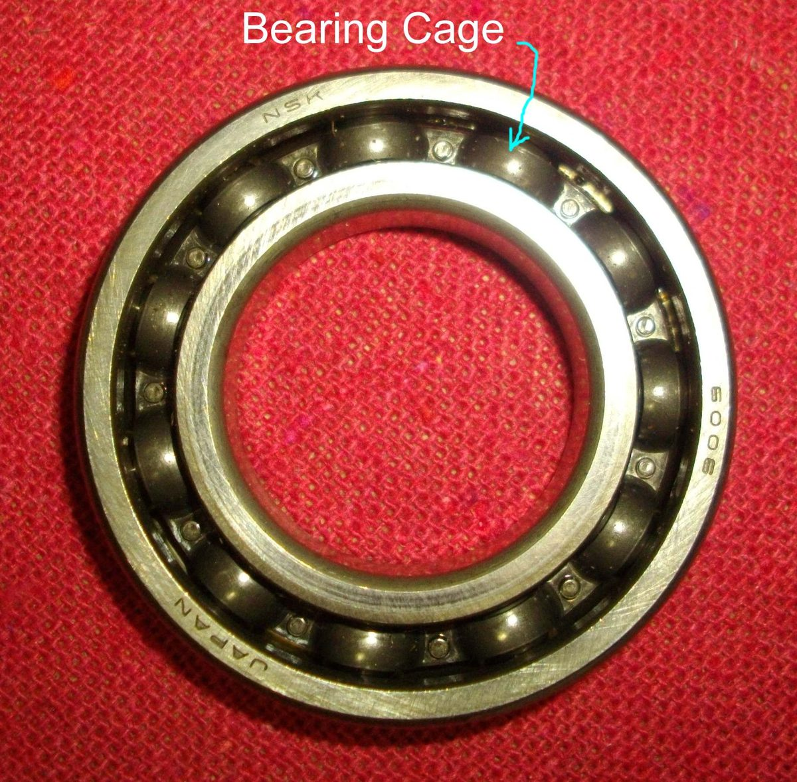
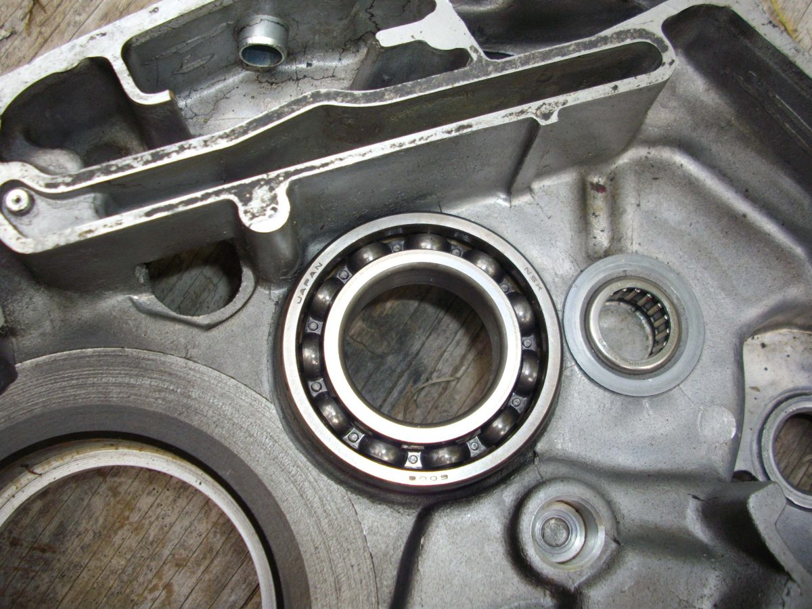
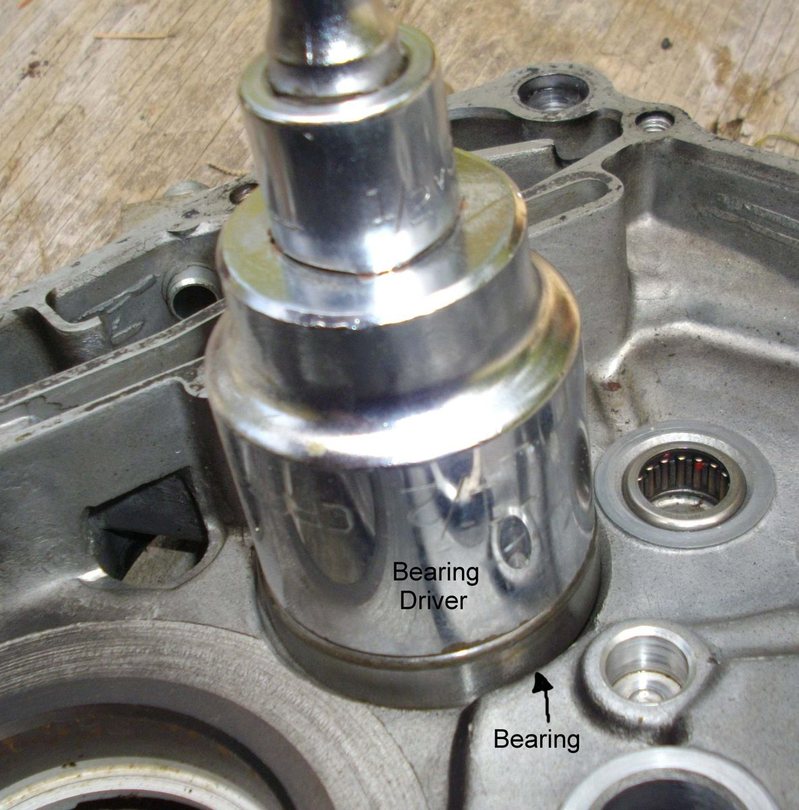

Many engines carry their crankshaft, gearbox shafts and sometimes the camshaft on rolling bearings. Ball bearings are the most common. Needle bearings (thin rollers in a cage) are used at the ends of two-stroke connecting rods.
What it does
A bearing lets a shaft turn with very little friction while holding it in exact position. Unshielded bearings are lubricated by the engine oil or, on a two-stroke, by the oil in the fuel. Shielded and sealed bearings carry their own grease and are used where oil does not reach, as in wheels.
Signs it is worn or failing
- A rumble or growl from the engine that follows engine speed, not road speed.
- Whining that is not the gears or chain.
- Shaft play that can be felt up and down when the case is open. Metal in the oil.
- A shaft that turns roughly or catches. A failing bearing can free itself for a moment, then bind again. Do not run the engine after that.
When to replace it
Replace any bearing that is rough, loose or has marked balls or rollers. When the case is open, replace all of them if the engine has a large mileage. Never refit a bearing that was pulled by its outer ring.
What to match when buying
- Find the number stamped on the side, or measure the inner and outer diameters and the width. Match all three.
- Match the type: open, steel shield or rubber shield. The wrong shield can starve the bearing of oil.
- Buy a known brand. Cheap bearings can have rough balls and loose tolerances.
Fitting notes
- Pull a bearing by its inner ring if it is to be reused. Pull by the outer ring only if it will be replaced.
- Many are a tight fit. The case is heated gently and the bearing chilled, so it slides in without hammering. The crankshaft end is often pulled in by a puller tool. See Split the crankcase and Check engine bearings.
- Drive a bearing in with a pipe that touches only the ring being pressed.
- Fit new seals after the bearings. See Engine oil seals.